Transplante Capilar em Altamira, PA
O transplante capilar do Dr. Edmar Spindola começa antes da sala de cirurgia. Como dermatologista há mais de 20 anos, ele avalia a pele e o couro cabeludo de cada paciente antes de indicar qualquer procedimento, e aplica em Altamira as mesmas técnicas usadas em centros de referência de São Paulo.
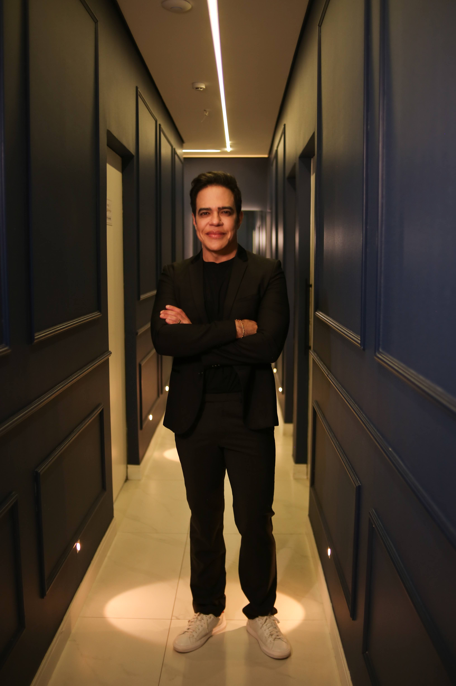
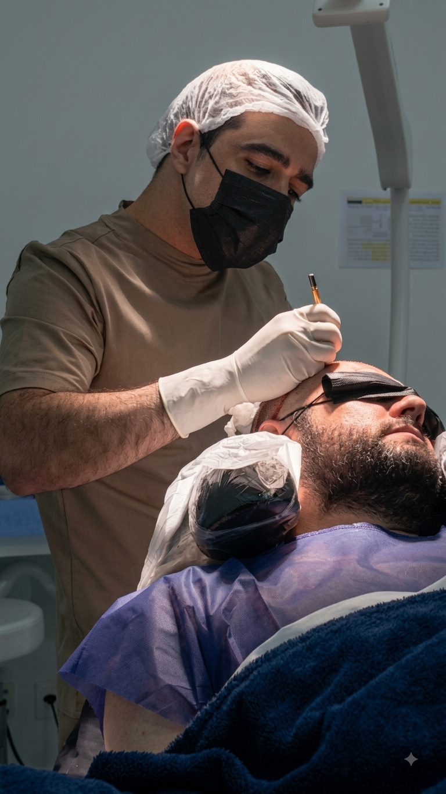
Mais que um cirurgião: um dermatologista especialista em cabelo e pele
A maioria das clínicas de transplante capilar em Altamira parte direto para a indicação cirúrgica. O Dr. Edmar Spindola parte da pele e do couro cabeludo, com o olhar de quem pratica dermatologia clínica e cirúrgica há mais de duas décadas.
20 anos de dermatologia aplicados ao cuidado capilar
Com CRM-PA 20747 e RQE 39683, o Dr. Edmar dedica parte importante da atuação dermatológica ao diagnóstico e tratamento de condições que afetam o couro cabeludo. Esse histórico sustenta cada avaliação de transplante capilar feita em Altamira.
Nem todo caso é cirúrgico: diagnóstico antes da indicação
Calvície tem causas diferentes, e nem todas pedem cirurgia. Em muitos casos, um tratamento clínico dermatológico é o que devolve densidade e confiança ao paciente. A indicação de transplante só acontece depois dessa avaliação completa, não antes dela.
A mesma técnica dos centros de referência de São Paulo, em Altamira
O Dr. Edmar aplica em Altamira os protocolos de extração e implante utilizados em centros de referência de São Paulo, sem exigir do paciente deslocamento até outro estado para ter acesso a esse padrão de atendimento.
Transplante capilar para cada tipo de necessidade
Cada indicação parte da avaliação dermatológica individual do paciente, não de um protocolo padrão aplicado a todos os casos.
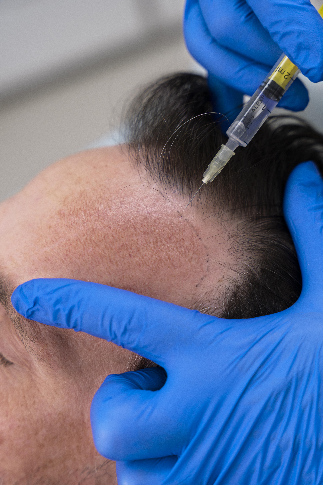
Transplante capilar masculino
Indicado para calvície de padrão andrógeno, avaliando grau de perda e qualidade da área doadora.
Ver detalhes →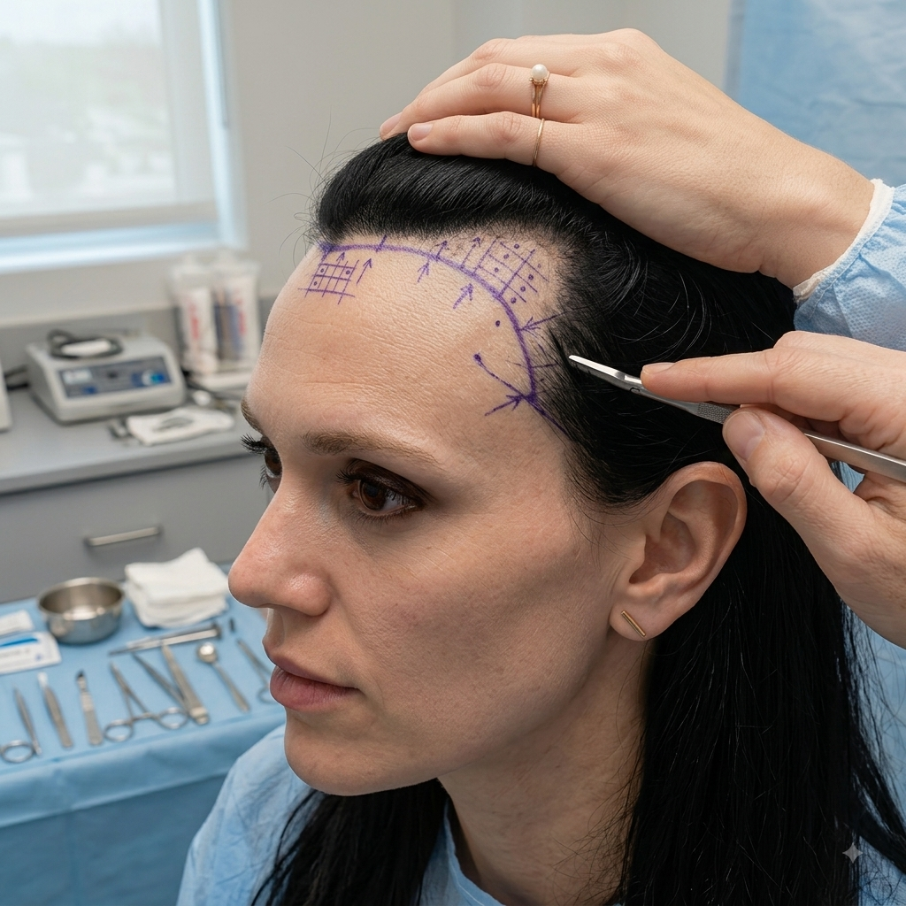
Transplante capilar feminino
Indicado após avaliação específica do padrão de afinamento e queda capilar em mulheres.
Ver detalhes →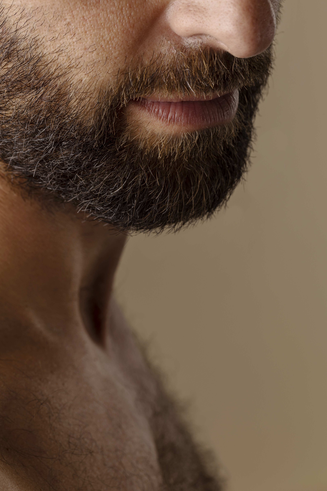
Transplante de barba
Preenchimento de falhas na barba com extração de folículos unidade a unidade.
Ver detalhes →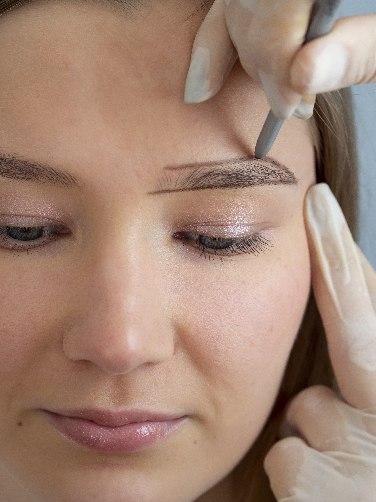
Transplante de sobrancelha
Reconstrução de sobrancelhas rareadas ou com falhas, definida a partir da avaliação individual.
Ver detalhes →Técnicas utilizadas no transplante capilar
O Dr. Edmar Spindola trabalha com três protocolos de extração e implante capilar. A técnica escolhida depende da área doadora, do grau de calvície e da rotina do paciente durante a recuperação.
FUE Tradicional
Extração unidade a unidade dos folículos, com raspagem completa da área doadora antes do procedimento. Indicada quando o caso pede maior volume de enxerto em uma única sessão.
FUE No-Shave (sem raspagem)
Mesma extração unidade a unidade, mas raspando apenas a faixa estreita da área doadora. O restante do cabelo permanece no comprimento normal, o que ajuda o paciente a manter a rotina durante a recuperação.
DHI (Direct Hair Implantation)
Técnica em que os folículos extraídos da área doadora são implantados diretamente na área receptora, com o auxílio da caneta implantadora Choi, sem abertura prévia de canais ou incisões separadas.
Um cuidado que começa antes da cirurgia
Diagnóstico dermatológico completo
A avaliação parte da pele e do couro cabeludo, não só da área a ser transplantada. Isso identifica causas da queda capilar que uma clínica sem formação em dermatologia não costuma investigar.
Indicação sem viés comercial
Quando o tratamento clínico é a resposta mais adequada, essa é a orientação dada ao paciente, mesmo quando isso significa não indicar a cirurgia.
Processo humanizado
Cada etapa é explicada antes de acontecer, com espaço para dúvidas antes, durante e depois do procedimento.
Tecnologia aplicada às três técnicas
Instrumentos e protocolos atualizados para FUE Tradicional, FUE No-Shave e DHI, aplicados folículo a folículo.
O transplante capilar pode ser indicado para você?
A indicação depende do grau de calvície, da área afetada e do histórico de cada paciente. Estes são os casos mais avaliados em consulta.
Calvície em progressão
Queda gradual, com afinamento visível ao longo do tempo. A avaliação dermatológica define o estágio e as opções de tratamento, cirúrgicas ou não.
Entradas e coroa
Perda localizada nas laterais da testa ou no alto da cabeça, sem comprometimento do restante do couro cabeludo.
Calvície feminina
Afinamento difuso ou localizado em mulheres, com avaliação específica para essa apresentação da queda capilar.
Evolução real, mostrada com responsabilidade
Arraste para comparar. Cada caso tem diagnóstico, técnica e tempo de evolução próprios, o resultado depende tanto da avaliação inicial quanto do procedimento escolhido.
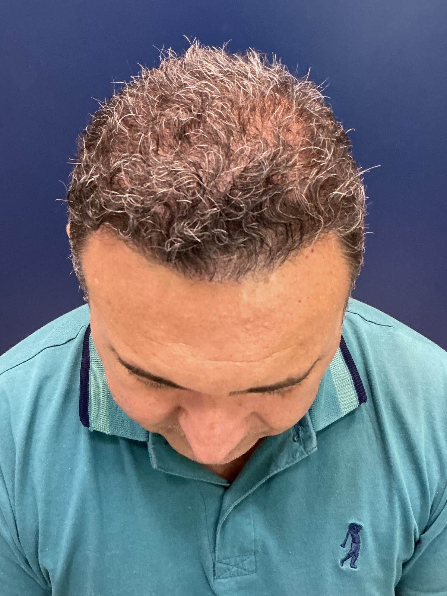

Caso 2 · técnica FUE, entradas e coroa. Evolução ao longo de 9 meses, resultado ainda em consolidação.
Sobre estas imagens: fotografias reais, sem edição, retoque ou filtro, publicadas com autorização do paciente e com anonimato preservado.
Resultados variam conforme grau de calvície, biotipo e adesão aos cuidados pós-procedimento, podendo incluir evoluções parciais ou complicações descritas na literatura científica. Dr. Edmar Spindola, CRM 128649-SP / 20747-PA, RQE 39683.
pessoas acompanham o trabalho do Dr. Edmar
Conteúdo educativo sobre transplante capilar e dermatologia, incluindo explicações sobre técnicas, diagnóstico e cuidados no pós-operatório.
O que os pacientes contam sobre o atendimento
"Fiz meu transplante capilar em Altamira sem precisar viajar até São Paulo, com explicações claras sobre a técnica em cada etapa do procedimento."
"Antes de decidir pelo transplante capilar, o Dr. Edmar avaliou minha pele e meu couro cabeludo com calma, sem pressa para indicar a cirurgia."
"A técnica FUE sem raspar a cabeça foi decisiva pra mim, e o acompanhamento em Altamira continuou firme mesmo depois da cirurgia."
Depoimentos reproduzidos com autorização dos pacientes, sem promessa de resultado.
Estrutura pensada para o seu conforto
Espaço equipado em Altamira, com uma equipe local que acompanha o paciente do diagnóstico ao pós-operatório.
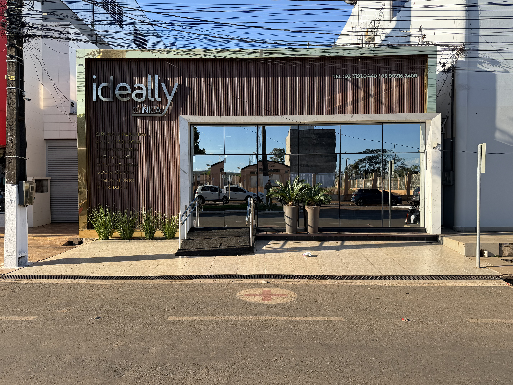
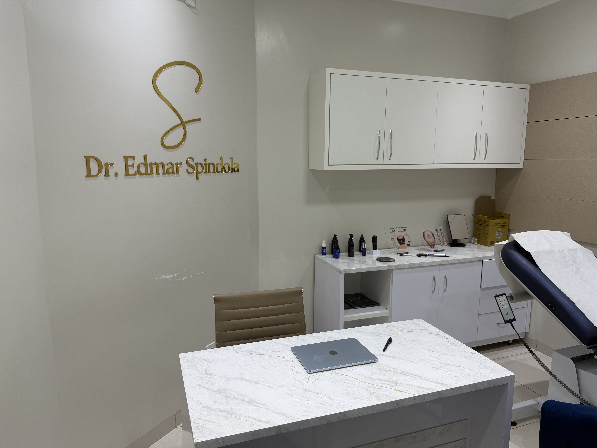
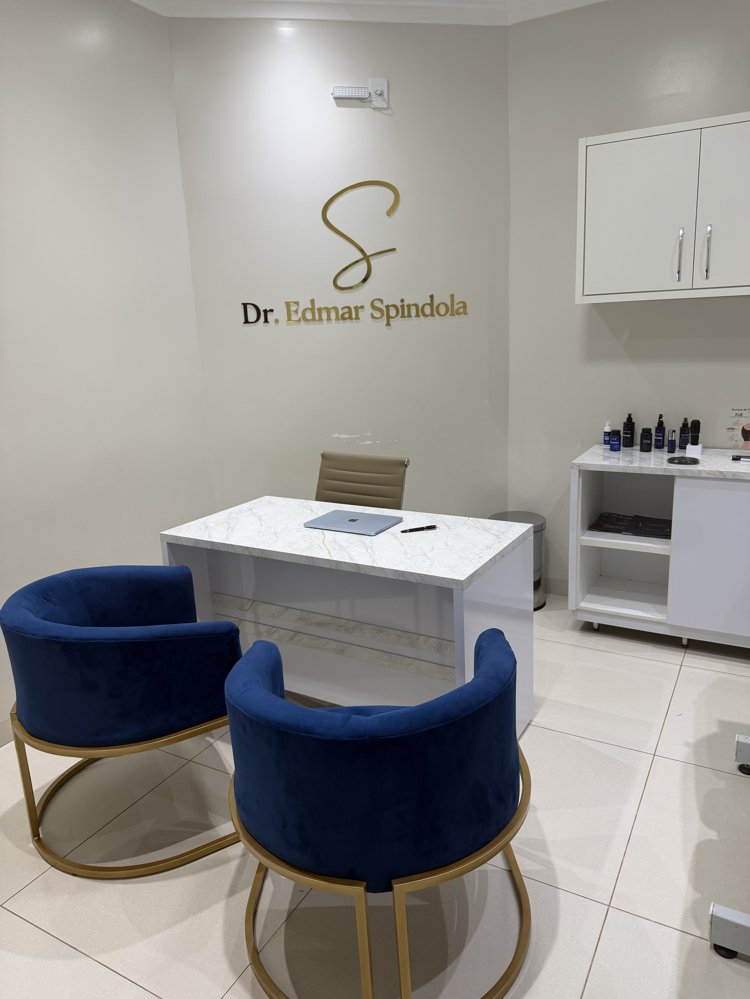
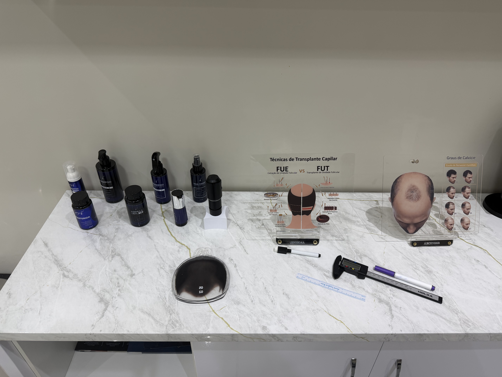
Altamira, PA
Avaliação, procedimento e acompanhamento pós-operatório do transplante capilar, tudo em Altamira.
Do blog

O que é a técnica FUE e por que ela evita raspar a cabeça
Como funciona a extração unidade a unidade e em quais casos essa abordagem é indicada.

Quanto tempo leva para o cabelo transplantado crescer
Um guia por fases, do pós-operatório imediato até o resultado mais consolidado.

Transplante capilar em mulheres: quando é indicado
As particularidades da queda capilar feminina e como a avaliação é conduzida nesses casos.
Perguntas frequentes sobre transplante capilar em Altamira
Depende da técnica. A FUE Tradicional raspa a área doadora, enquanto a FUE No-Shave raspa apenas uma faixa estreita, mantendo o restante do cabelo no comprimento normal.
Não necessariamente. Em alguns casos, um tratamento clínico dermatológico é mais indicado do que a cirurgia. Essa definição faz parte da avaliação com o Dr. Edmar.
A evolução varia por paciente. Em geral, os primeiros sinais de crescimento aparecem entre o terceiro e o quarto mês, com resultado mais consolidado a partir do oitavo ou décimo segundo mês.
Sim, em casos indicados após avaliação específica do padrão de queda capilar feminina.
A equipe local em Altamira acompanha o pós-operatório, com retornos e ajustes sem necessidade de deslocamento até outro estado.
O agendamento é feito pelo WhatsApp, e a equipe confirma a data disponível para avaliação e procedimento.